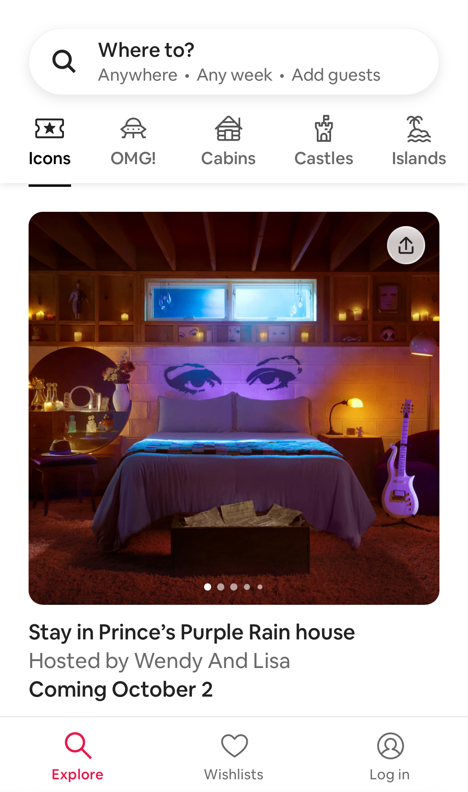

Repetition
Shopify
shopify.com

In design, repetition means reusing elements — colors, patterns, fonts, images, textures and more — throughout a piece of work. Another way of thinking about repetition is consistency. It can be used to create a sense of familiarity, consistency, and identity. Examples of how repetition helps users include: helping them find what they are looking for, feel comfortable, and remember the brand.
Shopify uses repetition in its design to provide a consistent user experience for its merchants and their customers. The admin dashboard, where merchants manage their stores, uses a consistent layout and design language, making it easy for users to navigate and use the platform. For customers shopping on Shopify-powered stores, the consistent use of product listing formats, navigation elements, and checkout processes ensures a smooth and efficient shopping experience.
White Space and Clean Design
Airbnb
airbnb.com
White space is the blank areas in a design, also known as negative space, and clean design is a philosophy that emphasizes simplicity and clarity. Both are important in web design because they can improve the user experience. White space can be used to separate and group elements, and to provide breathing room around text and images. It can also be used to create a focal point by giving space around a particular element.
Airbnb uses white space to emphasize their brands messaging. White space is also used to create a simple, user-friendly experience for its users. They use white space to create a sense of clarity and simplicity. Airbnb's design is minimal and uses white space to establish the overall structure and balance of their design. Airbnb's design is designed to make the property listing and booking process as easy and straightforward as possible.
Proximity
Trello
trello.com

Proximity specifically relates to arranging related elements close to each other to emphasize their connection. This principle ensures that content, objects, or text are logically organized, facilitating clear communication and a visually pleasing composition.
Trello uses hierarchy and the law of proximity to display the most important information at the top of the screen. Trello uses the law of proximityin its design to create a visual interface that's easy to use. The most important information, like the board name and card lists, is displayed prominently. Less important information are organized in logical groupings underneath.